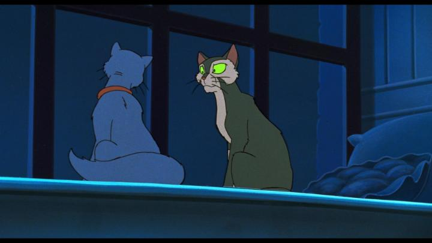

For a long time, one of the gaps in my animation hobby was a German film called "Felidae." I knew little about the cult picture, except that it featured cats, and that it was novel for being an adult (not for kids) mystery. I never expected the film to be rescued (it never received an official release in North America), but boutique distributor Deaf Crocodile did eventually give it a Bluray release in 2025. In fact, a UHD and Bluray combo pack, no less... I'd never have guessed this for an exclusive UHD release, but at least a Bluray disc was included in the box. And regarding its reputation, "Felidae" doesn't disappoint. At times, it shocked me, even giving "Watership Down" a run for its money. It casually discusses or shows sex and sexuality, and shows the aftermath of extreme violence against cats, including decapitation and spilled entrails. All with a straight-minded, almost cold German perspective. The plot includes a religous cult, grim scientific experimentation, and even discusses the idea of a "pure, original race" (the movie is based on a novel series by an author later marred with controversy regarding that, if you're looking for a rabbit hole to fall down into). All of these themes and topics betray the otherwise standard, American-family-film-like animation and direction, and it can catch one off guard when it appears on screen or in dialogue. Long story short, this is absolutely NOT for kids, and even adults sensitive to violence and cruelty to cats would be disgusted with the movie. As for me... I was at least partially impressed. The plot follows Francis, a house cat to an author that moved to a new neighbourhood. He's shocked to find a dead cat in the backyard, sliced at the neck. A gruff old stray named Bluebeard explains this is fourth murder so far, but suspects nothing of it. Francis isn't satisfied, and slowly uncovers the mystery of the town putting cats at risk, all while avoiding violent street cats in his way. Will Francis land on his feet, or will curiosity kill the cat? (If you need taglines for your own movie too, I work cheap.)Part of what engaged me was relating to Francis's demeanor. He's shaken by the corpses, but is also pragmatic and observant. He quickly becomes a literal detective in this mystery thriller, finding and questioning possible witnesses and sneaking around to overhear possible clues. He doesn't shy from recognizing that the victims were all "in heat," stating things matter-of-factly, to an unlikely and dimwitted ally Bluebeard. It really does play like a mature European crime drama, complete with frequent twists that had me at the edge of my seat whenever they found themselves somewhere new, gasping "no!" when something shocking appears.  That said, the direction and formatting is shockingly common, directly following in line with Disney's "Oliver and Company" or Don Bluth's "All Dogs Go To Heaven" or "An American Tail." It's true for the character design, character animation, background scenery, and music. There's even some early CGI compositing during a chase scene, which was novel for the time. And despite the dark context, yes, there are chase scenes! It's reminiscent of a kids movie designed to keep a child's attention from wandering, and if it wasn't for the dark subject matter, an adult viewer might be puzzled as to why they were watching it. This is also quite high praise, to compare it directly to the best 2D animation of the 80's. The nickname the movie has, "the R-rated Don Bluth-alike," is fitting. In a valuable Zoom interview on the Bluray disc, I learned the German production included an international animator team, including some from Canada, who had indeed worked on several American films with Disney and Bluth before and since. While it's easy to appreciate this as a new undiscovered form of traditional animation, it's also largely common to those contemporaries, save for some brief moments of ambition: one notable scene is a dream sequence of a human priest laughing among a field of mutilated cat corpses. Yes, it's nightmarish (again, DO NOT SHOW YOUR KIDS), but also stylistically animated to almost be experimental, and is extremely impressive for the time. The music score and voice acting is strong to follow suit, although I regret that the English dub is not included on the Bluray disc (this would have further given the impression that this was like a Don Bluth film). Of course, German acting with subtitles better fits the sense that this is a dark mystery. "Felidae" is a bizarre but exciting movie of conflicting senses. It's violent and dark, but also nostalgic to viewers who grew up with kids movies from the 80's and 90's. That clash of sensibilities is what makes it, in a disturbing sort of way, refreshing.
- "Ani" More reviews can be found at : https://2danicritic.github.io/ Previous review: review_Fear(s)_of_the_Dark Next review: review_Fire_and_Ice